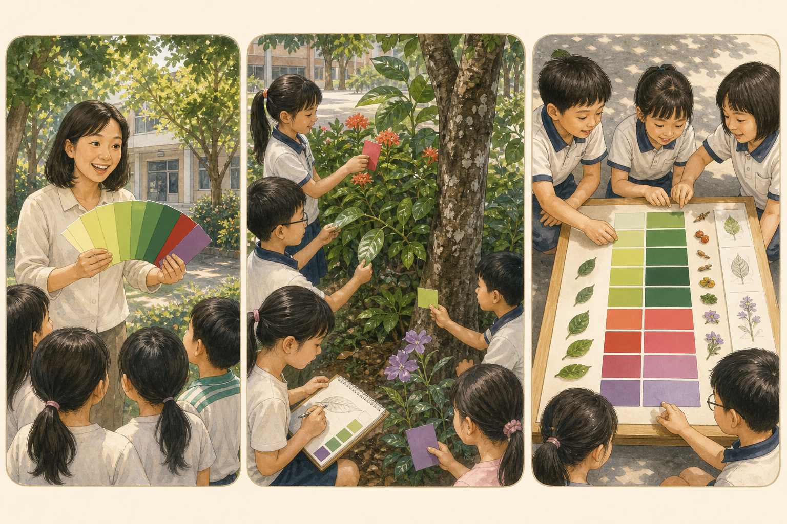

GAME 05 · COLOR PALETTE
校園色彩採集隊
「綠色」不是一種顏色。用紙色票靠近植物比對，記下陽光、樹蔭、新葉與老葉如何改變我們看到的色彩。

遊戲目標
- 細分植物的色相、明暗與飽和程度，觀察光線影響。
- 以色票、速寫和安全落物合作建立可重查的色彩紀錄。
場地
有日照與樹蔭對比的花圃、草地或中庭；下雨可在走廊觀察窗邊盆栽與校園景物。
材料
廢紙自製色票、夾板、鉛筆／色鉛筆、可重複黏土或布墊、白紙框；可用自然掉落且確認安全的少量材料。
事前準備
每組剪 12–18 張無字色票，包含多種綠、黃、褐、紅、紫；巡查路線並標出不可碰區。若使用落物，由教師先檢查。
30 分鐘時間分配
- 3 分 活動邊界與不採摘規則
- 5 分 示範色相、明暗與比色距離
- 14 分 原位尋色、速寫與記地點
- 5 分 排列漸層、命名色彩故事
- 3 分 科學整理、歸還落物洗手
遊戲步驟
- 教師將兩張綠色票靠近同一片葉，示範不觸碰花瓣、色票不遮住光線，並記「日照／樹蔭」。
- 每組選一條固定路線；找到顏色時，色票距離植物約一個手指寬，不折枝、不把活葉摘下來比。
- 記錄員畫植物部位輪廓，寫地點與光線；安全員檢查是否停在步道上。自然落物要先問教師才可取用。
- 至少找到 6 色，其中 3 色來自不同部位，例如嫩葉、老葉、花、果、樹皮或乾落葉。
- 回桌把色票由亮到暗或冷到暖排列，放上速寫／落物，說明一處「看起來不同但其實受光線影響」的例子。
計分與合作
每個有地點＋部位＋光線的色彩證據 1 分；找到同株植物兩種色差加 2 分；能提出光線重測方法加 2 分。全組共同決定排列規則得合作 2 分，不以顏色數量鼓勵採集。
教師引導問題
- 嫩葉和成熟葉的顏色只差深淺嗎？
- 葉片正面、背面為什麼可能不同？
- 如果雲遮住太陽，你的色票還會一樣嗎？
- 顏色能單獨用來辨認植物嗎？還缺什麼？
低年級簡化
只分亮／暗、暖／冷，找 4 色並用「像＿＿的綠」口頭命名；教師帶固定路線。
中年級標準
找 6–8 色，記部位與日照／樹蔭，完成一條漸層並比較同株兩部位。
高年級進階
固定色票、距離與背景，在日照／樹蔭各比一次，討論色相、明度、飽和度和觀察誤差。
安全注意事項
全程站步道、不採摘、不跨越花圃；不靠近蜂群、帶刺、乳汁不明或噴藥區。色票只靠近不摩擦植物。落物若有黴、汁液或蟲卵只觀察不拿；結束洗手。
科學知識整理
葉綠素使許多葉片呈綠色，其他色素與老化也會改變顏色；表面蠟質、茸毛、葉片厚度及光線方向都會影響反射進眼睛的光，所以比色要記錄環境。
簡易學習單
色票貼／畫在格中；植物部位＿＿；校園位置＿＿；□ 日照 □ 樹蔭；我會叫它＿＿色；同株另一部位＿＿色；可能造成色差的原因＿＿；還要加看的葉形／葉脈證據＿＿。